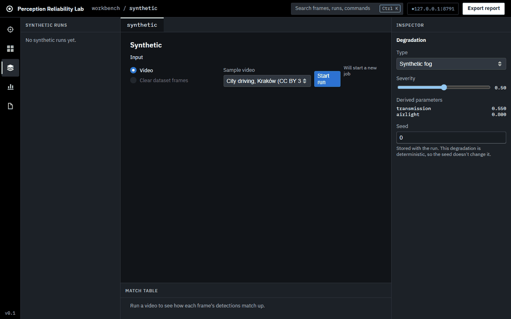

Edge Perception Reliability Lab
Personal project, Sep 2026 to now
Does a detector trained on clear roads still work in fog, snow, and at night? This lab runs YOLOX-Nano over 2,000 driving frames in 8 weather and lighting conditions, and compares real bad weather against simulated degradation.
On a 300-frame benchmark with 2,946 labeled objects, mAP dropped 85% under severe simulated fog. The scoring engine that classifies hits, misses, false alarms, and class mix-ups has 800+ automated tests.
Python, FastAPI, React, TypeScript
